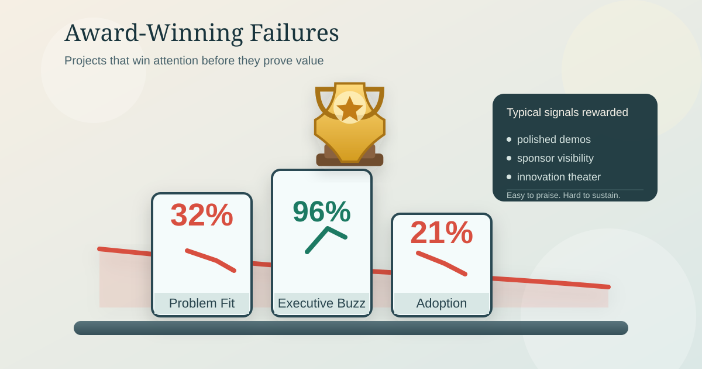

Award-Winning Failures: Why Organizations Celebrate Projects That Should Never Have Been Built
Some projects win awards, create executive visibility, and drive promotions long before they prove they are useful. The result is a pattern of symbolic success that often collapses when real adoption and business value are finally examined.

What Is an Award-Winning Failure?
In three decades in the technology industry, I have seen a pattern repeat often enough that it deserves a name. Projects are launched with excitement, backed by influential sponsors, presented as strategic breakthroughs, and celebrated internally as signs of innovation. They win awards. They earn promotions for the people attached to them. They become executive talking points. And then, two or three years later, they are quietly shut down because they delivered little value, solved the wrong problem, or never achieved meaningful adoption.
I call these award-winning failures.
The phrase sounds contradictory, but that is exactly why it matters. Most organizations like to believe that success is obvious. If a project gets funding, attention, praise, and formal recognition, then surely it must be valuable. In practice, that is not always true. Many projects succeed politically long before they succeed operationally. Some never succeed operationally at all.
That distinction matters because a project can be highly successful inside the organization while failing the business, the user, or the market. It can create prestige without creating impact. It can reward teams for motion rather than outcomes. It can look impressive in a presentation while being weak in day-to-day reality.
An award-winning failure is a project that receives recognition, executive praise, or career advancement inside an organization despite one or more of these realities:
- It solves the wrong problem.
- It focuses more on technology than business value.
- Its solution design is wrong for the actual need.
- Its user experience prevents adoption.
- It reinvents something that already exists and works better.
- It creates the appearance of progress without creating meaningful outcomes.
Why Organizations Celebrate Them
Most large organizations do not evaluate projects only on actual outcomes. They also evaluate them on signals that are much easier to produce and much easier to reward. These include visibility, executive sponsorship, novelty, scale, technical sophistication, and the quality of internal storytelling. In many environments, those signals are treated as evidence of value rather than as hypotheses to be tested.
A team that can tell a compelling story often has an advantage over a team that quietly improves an important business process. A flashy platform initiative gets more attention than a modest fix that saves customers time. A custom system presented as transformative may win more admiration than an unglamorous decision to buy an existing product and implement it well. Inside organizations, perception can move faster than evidence.
Common reasons this happens
- Visibility is mistaken for value. Projects that are large, new, and easy to present get disproportionate attention, while real business improvement is often quieter and less rewarded.
- Internal incentives are not aligned with external outcomes. People are rewarded for launching initiatives, sponsoring change, and shipping something visible, but rarely for deciding that a project should not exist.
- Technology has symbolic power. The language of modernization, AI, automation, cloud, and platforms can give weak ideas cover and delay scrutiny.
- Leadership sees presentations, not daily use. Senior stakeholders review milestones, dashboards, and demos, while users live with the friction, workarounds, and adoption barriers.
The five recurring patterns behind these failures
1. Solving the wrong problem
This is the most fundamental failure. If the problem is poorly chosen, the project can be executed perfectly and still be pointless. Sometimes the problem is selected because it is visible, politically convenient, or easy to frame as strategic. Sometimes the project begins with a solution already in mind and the problem is reverse-engineered to justify it.
The dangerous moment is when nobody challenges the premise. Once funding is approved, the discussion shifts from whether the work matters to how quickly it can be delivered. A well-run project that addresses the wrong problem is still a failure.
2. Technology-first thinking
Many projects begin not with a business need, but with a technology ambition. The organization wants to use a new platform, architecture, AI capability, or engineering approach, and the search for business value comes later. Teams spend more time discussing tools and integration patterns than understanding operational pain, user behavior, or measurable outcomes.
Technology-first projects are attractive because they signal sophistication, but a technically advanced answer to an unimportant question is still a bad investment. Technology should support the business objective. It should not become the objective.
3. Wrong solution design
Even when the problem is real, the chosen solution is often mismatched to the need. Organizations apply enterprise-scale designs to problems that need simple answers. They build platforms where a workflow would suffice, and ecosystems where a well-configured product would do.
Big designs sound strategic, but overdesign introduces cost, delay, fragility, and dependence. One of the clearest warning signs is when the solution becomes much more elaborate than the problem description. That usually means the organization has stopped solving a problem and started admiring its own design.
4. Bad user experience and weak adoption
Many internally celebrated projects fail in the most practical way possible: people do not want to use them. The system is inconvenient, confusing, slower than the old process, or misaligned with how work is actually done. The team has built around process models, reporting expectations, or architecture assumptions rather than user reality.
Low adoption is not a change-management side issue. It is often the clearest signal that the project does not create enough value in the real world. This is also why organizational change efforts so often collapse in practice, a pattern explored in Why Change Management Often Fails – And How to Get It Right.
5. Reinventing the wheel
Some of the most expensive failures begin with a familiar sentence: “The existing tools do not quite meet our needs.” Sometimes that is true. Often it is not true enough to justify building something from scratch. Organizations repeatedly underestimate the total lifecycle cost of custom solutions, including support, upgrades, governance, training, and eventual replacement.
Reinventing existing capabilities can feel heroic inside a company because it signals control and uniqueness. But unless the capability is genuinely differentiating, custom building is often the most expensive way to reproduce a mature feature set badly.
Why These Projects Persist
If these failures are so common, why are they so often rewarded and so slow to disappear? The answer is that organizations are very good at rewarding proxies for success. An award-winning failure often has excellent executive sponsorship, polished branding, cross-functional visibility, and milestones that look strong because the assumptions underneath them were never challenged.
That is why some projects collect applause on the way to irrelevance. The organization is not necessarily lying. It is operating with an incomplete definition of truth. It sees effort, novelty, executive confidence, and internal momentum. It does not yet see the absence of sustained usefulness.
The career paradox
A project may fail the business and still help the careers of the people associated with it. Sponsors gain visibility. Program leaders demonstrate scale. Architects demonstrate strategic thinking. Teams gain exposure to senior management. The project becomes a career stage, not just a delivery effort.
This does not require cynicism. It only requires incentive systems that reward the theater of progress more reliably than the substance of outcomes. If being attached to a high-profile initiative is good for careers regardless of eventual business value, rational people will continue to protect those initiatives.
Why it takes years to shut them down
These projects are rarely terminated quickly. Once public recognition has been attached to the work, stopping it becomes politically harder because doing so may imply that earlier praise was misplaced. Sunk-cost thinking takes over, accountability diffuses as people rotate roles, and the project becomes institutional furniture: expensive, underused, and hard to remove.
Many organizations have delivery governance, architecture review, and funding gates, but they have weak mechanisms for testing whether real-world value is emerging. As a result, projects are often shut down only when external pressure forces honesty.
What better organizations do differently
- They challenge the problem before approving the solution. They ask whether the problem is real, important, measurable, and worth solving now.
- They reward evidence over theater. Demos, decks, and dashboards are useful, but they are not substitutes for adoption, customer benefit, or financial value.
- They prefer the simplest adequate solution. If an existing product solves the need well enough, they use it. If a workflow change is sufficient, they do not build a platform.
- They treat adoption as a core outcome. They test workflows early and accept that a technically sound system is still a failed system if people avoid it.
- They make it safe to stop. Stopping weak work is treated as judgment, not embarrassment.
A More Honest Definition of Success
If leaders want fewer award-winning failures, they need better questions at the start and in the middle of major initiatives. Useful questions include: What specific problem are we solving? Who experiences it directly? What outcome would prove the initiative is valuable? What is the simplest credible solution? Why can an existing product or process not address the need? What would make us stop or redesign this effort six months from now?
These are not anti-innovation questions. They are the discipline required for meaningful innovation. The real test of a project is not whether it launches with fanfare or wins recognition inside the organization. The real test is whether it makes something meaningfully better for the business, the customer, the user, or the operation.
Organizations mature when they separate symbolic success from actual success. They become less impressed by internal prestige and more interested in sustained usefulness. Some of the highest-value decisions in technology are invisible: choosing not to build, simplifying instead of expanding, buying instead of custom developing, and stopping instead of defending.
Those decisions rarely win awards. But they often create real value. An organization does not become better by getting better at celebrating projects. It becomes better by getting better at judging which projects deserve to exist in the first place.